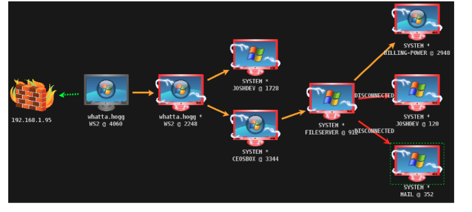

beacons/internal infrastructure:
-don't want to build a campaign that can be taken out easily
-assume some agents will be discovered by red team
-if all hosts are talking to 1 or 2 c2 endpoints, pretty easy to take out entire infra
-SMB Beacons b/t hosts for 2 comms
->result:
-one compromised machine comm to the internet
-all other machines on on network comm through initial compromised host over smb
-allows: if second systems are detected, might not be able to id c2 domain associated w/ attak
https://www.cobaltstrike.com/help-smb-beacon
